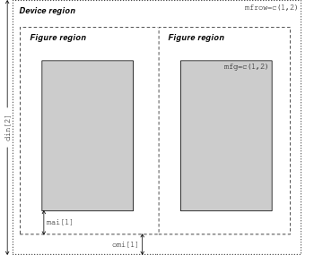
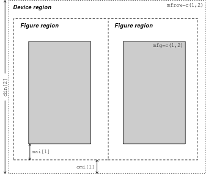

12.3 저수준 그래프 함수
- 고수준 그래픽 함수(일반적으로
plot()함수)를 통해 호출한 그래픽 장치 위에 추가적인 그래프 요소(점, 선, 면, 문자, 범례 등)를 수동으로 추가 - 그래프의 미학적 효과를 극대화 하기 위해, 최소한으로 그래픽 장치를 호출(공백, 크기, 레이아웃 축 정의) 후 저수준 그래픽 함수를 이용해 그래프 생성
- 12.2.1 절
plot()함수에서 확인했던 다양한 그래픽 관련 인수(예:main,xlim,ylim,pchlty,col등)들을 저수준 그래프 함수에서 사용 가능 - 명시적으로 포함되지 않은(
help()통해 확인) 인수들은...로 표현되고,par()함수 내 파라미터 값으로 전달
12.3.1 par()
- 전체 그래픽 장치에 적용되는 여러가지 파라미터를 제어하며, 고수준 및 저수준 그래프의 모양 및 미학적 특성 설정
par()함수를 통해 그래픽 파라미터 설정 및 조회 가능
# 그래프 파라미터 조회
# 처음 12개 파라미터들에 대해서만 조회
unlist(par()) %>% head(12) xlog ylog adj ann ask
"FALSE" "FALSE" "0.5" "TRUE" "FALSE"
bg bty cex cex.axis cex.lab
"transparent" "o" "1" "1" "1"
cex.main cex.sub
"1.2" "1" # 파라미터 이름으로 값 추출
par("mar")[1] 5.1 4.1 4.1 2.1par()함수 조정 파라미터 리스트
| Parameter | 값 | 설명 |
|---|---|---|
| din, fin, pin | = c(width, height) | 그래픽 장치(device), figure, plot 영역 크기(너비: width, 높이: height) 조정(인치 단위) |
| fig | =c(left, right, bottom, top) | 장치 내 figure 영역의 4개 좌표 조정을 통해 figure 위치 및 크기 조정 |
| mai, mar | = c(bottom, left, top, right) | Figure 영역의 각 4개 마진의 크기 조정(인치 또는 현재 폰트 사이즈 기준 텍스트 길이 단위) |
| mfcol,mfrow | = c(row, column) | 그래프 화면 출력을 열 또는 행 기준으로 분할 |
| mfg | =c(rows, columns) | mfcol 또는 mfrow로 분할된 그림에서 figure의 위치 조정 |
| new | =TRUE or =FALSE | 현재 figure 영역을 새 그래프 장치로 인지(TRUE 이면 이미 출력된 그림 위에 새로운 고수준 그래프 함수가 생성) 여부 |
| oma,omd,omi | =c(bottom, left, top, right) | Outer margin (여백) 각 영역별 크기 조정(인치 또는 설정 텍스트 크기 기준) |
- R 그래픽 레이아웃(그림 12.1 참조) 조정 파라미터
 

Figure 12.4: 레이아웃 파라미터. AIMS-R-Users 에서 발췌
아래 par() 함수의 파라미터 값에 대한 도표 생성을 위한 R 스크립트는 Graphical parameters of R graphics package에서 참고 및 발췌
pin
현재 plot의 차원(너비와 높이) 조정
fin
Figure 영역의 차원(너비와 높이)
fig
c(x1, x2, y1, y2)형태의 숫자형 벡터를 인수로 받아 그래픽 디바이스의 디스플레이 영역에서 figure 영역의 좌표 지정- 처음 디폴트 값은
c(0, 1, 0, 1)fig파라미터 조정의 목적이 여러 개의 그림을 한 화면에 출력하는 것이 목적이라면par()파라미터 중new의 값을TRUE로 설정
text_loc <- seq(0, 0.25, by = 0.05)
par_name <- c("mar", "mai", "fig", "fin", "plt", "pin")
plot_dim <- function(x, y, op, title, ...) {
for (i in 1:length(text_loc)) {
text(x, y + text_loc[i],
paste0(par_name[i], " = c(",
paste(round(op[[par_name[i]]]),
collapse = ", "), ")"),
adj = 0, ...)
}
text(x, y + text_loc[i] + 0.05, title, adj = 0)
}
# 1. plot area available when internal margins are 0
par(op)
par(mai = c(0, 0, 0, 0), xaxs = 'i', yaxs = 'i')
plot.new()
abline(h = c(0.4, 0.9), v = c(0.4, 0.9), lty = 4)
rect(0.4, 0.4, 0.9, 0.9, border = "red")
par(op)
# 2. Plot new fig
newfig <- c(0.4, 0.9, 0.4, 0.9)
par(fig = newfig, new = TRUE)
op_reduced <- par(no.readonly = TRUE)
set.seed(12345)
plot(runif(10), runif(10), typ = 'p',
xlab = 'X', ylab = 'Y', xlim = c(0, 1), ylim = c(0, 1))
par(op)
par(mai = c(0, 0, 0, 0), xaxs = 'i', yaxs = 'i', new = TRUE)
# 3. Info about dimensions
plot.new()
plot_dim(0.05, 0.5, op_reduced, "New plot dimension on the right", cex = 0.9)
plot_dim(0.5, 0.05, op, "Default plot dimensions", cex = 0.8)Figure 12.5: fig 인수 조정 예시: Graphical parameters of R graphics package에서 발췌
mar
c(bottom, left, top, left)형태의 수치형 벡터를 값으로 갖음- plot 영역 밖의 여백(figure 영역)을 line 수로 지정(아래 그림 참고)
- 디폴트 값은
c(5, 4, 4, 2) + 0.1임
Figure 12.6: Figure 영역에서 기본 여백: Graphical parameters of R graphics package 에서 발췌
mfcol, mfrow
c(nrow, ncol)형태의 2차원 수치형 벡터를 값으로 갖음- 앞의 예제에서 확인한 바와 같이 각 행과 열 별로 행 기준 또는 열 기준으로 다중 그래프를 한 화면에 출력
- 정방형 그래프로 분할하며
c(2, 2)인 경우 텍스트 크기는cex값 기준 0.83배 감소
par(oma = c(0, 0, 3, 0), # 윗쪽 여백 크기 조정
mfrow = c(3, 2))
for (i in 1:6) {
set.seed(12345)
plot(rnorm(20), rnorm(20),
main = paste("Plot", i))
box("figure")
}
# 윗쪽 여백(side=3)에 텍스트 출력
mtext(side = 3, line = 1, cex = 0.8, col = "blue",
"Muptiple plots with mfrow = c(2, 3)",
outer = TRUE) # outer 여백 사용 여부
par(oma = c(0, 0, 3, 0),
mfcol = c(3, 2))
for (i in 1:6) {
set.seed(12345)
plot(rnorm(20), rnorm(20),
main = paste("Plot", i))
box("figure")
}
mtext(side = 3, line = 1, cex = 0.8, col = "blue",
"Muptiple plots with mfcol = c(3, 2)",
outer = TRUE)mfg
c(i, j)형태의 숫자형 벡터의 값mfcol또는mfrow파라미터로 그림 배열이 정해진 상태에서 어떤 그림이 다음에 드려지는지를 지정c(1,1)은 차원과 상관 없이 맨 처음 출력한 그래프가 생성
df_order <- expand.grid(x = 1:2,
y = 1:3)
set.seed(123)
idx <- sample(2:6, nrow(df_order)-1)
df_order <- df_order[c(1,idx), ]
par(mfrow = c(2, 3),
oma = c(0, 0, 3, 0))
for (i in 0:5) {
set.seed(123)
par(mfg = as.numeric(df_order[i+1, ]))
plot(rnorm(20), rnorm(20),
main = paste("Plot", i+1))
box("figure")
}
mtext(side = 3, line = 1, cex = 0.8, col = "blue",
"Multiple plots by row: order in mfrow changed by mfg parameter.",
outer = TRUE)mfrow와mfcol유사함수:layout(),split.screen()layout(): 행렬 객체를 인수로 받아 화면 분할
# mtcars 데이터셋
graph_array <- matrix(c(1, 1, 2, 3), nrow = 2, byrow = TRUE)
par(oma = c(0, 0 , 3, 0))
layout(mat = graph_array)
plot(mpg ~ disp, # 데이터 프레임인 경우 수식 표현도 가능
data = mtcars,
main = "layout 1")
hist(mtcars$disp,
main = "layout 2")
hist(mtcars$mpg,
main = "layout 3")
mtext(side = 3, line = 1, cex = 1, col = "blue",
"c(1, 1): scatter plot, c(2) = histogram: dsip, c(3) = histogram: mpg",
outer = TRUE)split.screen():layout()과 유사하게 그래프의 화면을 분할하고 더 많은 기능을 제공screen(): 분할된 화면 지정erase.screen(): 지정된 화면의 그래프 삭제
split.screen(fig = c(2, 2)) # 화면을 2 by 2로 분할[1] 1 2 3 4par(oma = c(0, 0, 3, 0))
screen(n = 4)
vioplot::vioplot(mpg ~ cyl, data = mtcars,
main = "screen n = 4")
screen(n = 1)
hist(mtcars$mpg,
main = "screen n = 1")
screen(n = 3)
plot(mpg ~ wt, data = mtcars,
main = "screen n = 3")
screen(n = 2)
boxplot(mpg ~ gear, data = mtcars,
main = "screen n = 2")
mtext(side = 3, line = 1, cex = 0.8, col = "blue",
"Split using split.screen()",
outer = TRUE)new
- 논리값(
TRUE또는FALSE) 지정- 디폴트 값은
FALSE- 새로운 그래프를 이미 존재하는 그래프 장치에 출력
# boxplot + violin plot
## iris 데이터 셋
par(bty = "n") # x-y 축 스타일 지정
boxplot(Sepal.Length ~ Species,
data = iris)
new_fig <- c(0.05, 0.46, 0.4, 0.99)
par(new = TRUE,
fig = new_fig)
vioplot::vioplot(Sepal.Length ~ Species,
data = iris,
col = "skyblue",
yaxt = "s",
ann = FALSE)oma
c(bottom, left, top, right)형태의 숫자형 벡터 값 사용- Outer 여백의 크기 조정(텍스트 라인 기준)
- 아래 예시는
oma = c(2, 3, 3, 1)인 경우 여백 표시
Figure 12.7: Outer 여백 조정 파라미터(mar = c(2, 3, 3, 1)) Graphical parameters of R graphics package에서 발췌
12.3.2 points()
- 점을 그리는 저수준 그래프 함수로 이미 출력된 x-y 좌표 위에 지정한 점 문자 출력
- x-y 좌표 지정은
plot()함수와 동일 - 많이 사용되는 점 문자 기호(symbol)은 그림 12.3 참고
# cars 데이터셋
par(mfrow = c(1, 2))
plot(dist ~ speed, data = cars,
type = "n",
bty = "n",
main = "points() function example 1: cars dataset")
points(cars$speed, cars$dist,
pch = 16,
col = "darkgreen",
cex = 1.5)
shapes <- 15:17 # pch 지정
plot(Petal.Length ~ Sepal.Length, data = iris,
type = "n",
bty = "n",
main = "points() function example 2: iris dataset")
points(iris$Sepal.Length,
iris$Petal.Length,
pch = shapes[as.numeric(iris$Species)], # 각 Species에 대해 shapes 할당
col = as.numeric(iris$Species),
cex = 1.5)12.3.3 lines()
- x-y 좌표의 점을 이어 선을 만드는 함수
plot()함수에서type인수에 “l”을 사용한 것과 유사- 선의 모양(
lty)과 굵기(lwd)를 지정할 수 있으며 그림 12.2와 그림 12.8를 참고
Figure 12.8: 선 두께(lwd) 파라미터: Graphical parameters of R graphics package 에서 발췌
line()함수 사용 예시: 정규분포 분포 그리기
# 정규분포 평균=0, 분산=1
# 정규분포 평균=0, 분산=2
# 정규분포 평균=0, 분산=3
par(mar = c(3, 0, 3, 0))
x <- seq(-5, 5, 0.01)
y <- mapply(dnorm,
list(x, x, x),
c(0, 0, 0),
c(1, sqrt(2), sqrt(3)))
plot(x, y[,1],
type = "n",
bty = "n",
yaxt = "n",
ann = FALSE,
xlim = c(-5, 5))
lines(c(0, 0), c(0, max(y[,1])), lty = 2, col = "lightgray")
lines(x, y[,1], lty = 1, lwd = 2,
col = "black")
lines(c(0.3, 2), rep(max(y[,1]), 2), lty = 1, col = "gray")
text(2.1, max(y[,1]),
expression(paste(mu == 0, "," ~~ sigma == 1)), # 수식 표현
adj = 0)
lines(x, y[,2], lty = 2, lwd = 2, col = "blue")
lines(c(0.3, 2), rep(max(y[, 2]), 2), lty = 1, col = "gray")
text(2.1, max(y[,2]),
expression(paste(mu == 0, "," ~~ sigma == 2)), # 수식 표현
adj = 0)
lines(x, y[,3], lty = 3, lwd = 2, col = "green")
lines(c(0.3, 2), rep(max(y[,3]), 2), lty = 1, col = "gray")
text(2.1, max(y[,3]),
expression(paste(mu == 0, "," ~~ sigma == 3)), # 수식 표현
adj = 0)
mtext("Normal distribution", side = 3, adj = 0.2, cex = 2)12.3.4 ablines()
- x-y 좌표에 직선을 그리는 함수로
lines()함수와 유사하나 y 절편과 x 기울기, 또는 x 절편(y 축과 평행한 직선,(x, 0))과 y 절편(x축과 평행한 직선,(0, y))을 이용해 직선을 그릴 수 있음a: y 절편b: x 기울기h: x축과 수평선(y 값)v: x축과 수직선(y축과 수평선, x 값)
# 회귀직선과 x, y의 평균선, 회귀직선으로부터 각 점 까지 거리를 직선 표시
## mtcars 데이터
plot(mpg ~ hp, data = mtcars,
type = "n",
bty = "n",
xlim = c(50, 350),
ylim = c(5, 40),
main = "abline() examples with mtcars dataset",
xlab = "Horse power",
ylab = "Miles/gallon",
cex.main = 1.5)
m <- lm(mpg ~ hp, data = mtcars) # 일변량 회귀모형
yhat <- predict(m) # 회귀모형의 예측값
# 회귀직선으로부터 각 관측점 까지 거리(오차) 직선 표시 함수
dist_error <- function(i) {
lines(c(mtcars$hp[i], mtcars$hp[i]),
c(mtcars$mpg[i], yhat[i]),
col = "green",
lwd = 0.8,
lty = 1)
}
for (i in 1:nrow(mtcars)) dist_error(i)
with(mtcars,
points(hp, mpg,
pch = 16,
cex = 1))
abline(m, lty = 1, lwd = 3, col = "red")
abline(h = mean(mtcars$mpg),
lty = 2,
col = "darkgray") # mpg 평균
abline(v = mean(mtcars$hp),
lty = 2,
col = "darkgray") # hp 평균
text(mean(mtcars$hp), 40,
# text 수식 표현 참고
bquote(paste(bar(x) == .(sprintf("%.1f", mean(mtcars$hp))))),
adj = 0,
pos = 4)
text(350, mean(mtcars$mpg),
bquote(paste(bar(x) == .(sprintf("%.1f", mean(mtcars$mpg))))),
pos = 3)Figure 12.9: abline(), lines() 함수를 이용한 회귀직선 및 오차 거리 표시 예제
12.3.5 arrows()
- 화살표를 그리는 함수
x0, y0, x1, y1형태의 숫자를 값으로 사용(x0, y0): 시작점 좌표(x1, y1): 끝점 좌표angle,length,code인수 조정을 통해 화살표 스타일 지정
par(mar = rep(0, 4))
plot(1, 1,
type = 'n', axes = FALSE, ann = FALSE,
xaxs = 'i', yaxs = 'i',
xlim = c(0,11), ylim = c(0,11))
text(5.5, 10.5,
"Type of arrows by values of angle, length, and codes",
font = 2, # 2=bold, 3=italic, 4=bold italic
adj = c(0.5, 0),
cex = 1.5)
angle_val <- c(60, 90, 120)
length_val <- c(0.25, 0.1, 0.5)
code_val <- c(0, 1, 3)
for (i in 1:3) {
arrows(1, 9-i+1, 5, 9-i+1,
length = length_val[i])
text(6, 9-i+1, pos = 4,
sprintf("angle = 30, length = %.2f, code = 2",
length_val[i]))
}
for (i in 1:3) {
arrows(1, 6-i+1, 5, 6-i+1,
length = 0.25,
angle = angle_val[i])
text(6, 6-i+1, pos = 4,
sprintf("angle = %d, length = 0.25, code = 2",
angle_val[i]))
}
for (i in 1:3) {
arrows(1, 3-i+1, 5, 3-i+1,
length = 0.25,
angle = 30,
code = code_val[i])
text(6, 3-i+1, pos = 4,
sprintf("angle = 30, length = 0.25, code = %d",
code_val[i]))
}Figure 12.10: arrows() 함수 주요 파라미터 변경에 따른 화살표 출력 결과
12.3.6 rect()
- x-y 좌표 위에 사각형을 그리는 함수
xleft: 사각형의 왼쪽 x 좌표ybottom: 사각형의 아래쪽 y 좌표xright: 사각형의 오른쪽 x 좌표ytop: 사각형의 위쪽 y 좌표
# 길이와 높이가 5인 정사각형 그리기
plot(x = 1:10,
y = 1:10,
type = "n",
xlab = "", ylab = "",
main = "Rectangle coordinates used in rect()")
rect(3, 3, 8, 8,
density = 10, # 사각형 내부를 선으로 채움
angle = 315) # 내부 선의 기울기 각도(degree)
text(3, 3, "(xleft = 3, ybottom = 3)", adj = 0.5, pos = 1)
text(8, 3, "(xright = 8, ybottom = 3)", adj = 0.5, pos = 1)
text(8, 8, "(xright = 8, ytop = 8)", adj = 0.5, pos = 3)
text(3, 8, "(xleft = 3, ytop = 8)", adj = 0.5, pos = 3)
grid()Figure 12.11: rect() 좌표 인수
12.3.7 polygon()
- x-y 좌표의 점을 연결해 폐 다각형을 만드는 함수
- 좌표 지정 방법은
plot()함수와 동일
# polygon() 사용 예시
plot(x = 0:10,
y = 0:10,
type = "n",
bty = "n",
xaxt = "n",
yaxt = "n",
xlab = "",
ylab = "",
main = "Polygon examples")
# Pentagon
theta1 <- seq(-pi, pi, length = 6)
x <- cos(theta1 + 0.5*pi) # cosine 함수
y <- sin(theta1 + 0.5*pi)
x1 <- 2*x + 2; y1 <- -2*y + 7
polygon(x1, y1)
text(2, 9.2, "Pentagon", adj = 0.5, pos = 3, cex = 1.5)
# Octagon
theta2 <- seq(-pi, pi, length = 9)
x <- cos(theta2) # cosine 함수
y <- sin(theta2)
x2 <- 2*x + 7; y2 <- -2*y + 7
polygon(x2, y2,
col = "#05B8FF",
border = "black",
lwd = 4)
text(7, 9.2, "Octagon", adj = 0.5, pos = 3, cex = 1.5)
# 별표시
x2 <- c(2, 4/3, 0, 2/3, 0, 4/3, 2, 8/3, 4, 10/3, 4, 8/3)
y2 <- c(4, 3.0, 3, 2.0, 1, 1.0, 0, 1.0, 1, 2.0, 3, 3.0)
polygon(x2, y2,
density = 20,
angle = 135,
lty = 1,
lwd = 2)
text(2, 4.1, "Star (Jewish)", adj = 0.5, pos = 3, cex = 1.5)
# Triangle (perpendicular)
x3 <- c(5, 9, 5)
y3 <- c(0, 0, 4)
polygon(x3, y3, lwd = 3, col = "gray")
x4 <- c(5, 5.3, 5.3, 5)
y4 <- c(0, 0.0, 0.3, 0.3)
polygon(x4, y4, lwd = 3) # 직각표시
text(7, 4.1, "Triangle (perpendicular)", adj = 0.5, pos = 3, cex = 1.5)- 확률분포 아래 면적 표시
- \(Z ~ \stackrel{i.i.d}{\sim} N(0, 1)\) 라고 할 때 \(P(-1.5 < Z < 0.7)\)에 해당하는 부분 표시
# 표준정규분포 곡선 하 면적 표시
x <- seq(-3, 3, by = 0.01)
z <- dnorm(x)
plot(x, z,
type = "n",
bty = "n",
xlab = expression(bold(Z)),
ylab = "Density",
main = "Standard normal distribution")
idx <- x > -1.5 & x < 0.7 # 해당 구간 index 설정
polygon(c(-1.5, x[idx], 0.7),
c(0, z[idx], 0),
col = "green",
border = "green")
lines(x, z, lty = 1, lwd = 2)
text(x = 0.5, y = 0.15,
bquote(P({-1.5 < Z} < 0.7 ) ==
.(sprintf("%.3f", pnorm(0.7) - pnorm(-1.5)))),
# pnorm = P(Z <= c), 평균=0, 분산=1 인 경우
adj = 1)Figure 12.12: polygon()을 이용한 확률밀도함수 곡선 아래 면적 표시 예시
12.3.8 text(), mtext()
text(): x-y 좌표에 문자열을 입력하는 함수
text(x, # x-좌표값
y, # y-좌표값
label, # 입력할 텍스트 문자열
adj, # 원점 좌표를 기준으로 텍스트 문자열 자리 맞춤
# 0 - 1 사이 값은 수평 맞추기 지정
# 0=오른쪽, 0.5=가운데 정렬, 1=왼쪽 정렬 (원점 기준)
pos, # adj를 단순화하여 텍스트 자리 맞춤
# 1=bottom, 2=left, 3=top, 4=right,
srt # 문자열 회전(in degree)
...
)
Figure 12.13: text() 함수에서 adj 파라미터 값에 따른 텍스트 위치: AIMS-R-users 에서 발췌

Figure 12.14: text() 함수에서 pos 파라미터 값에 따른 텍스트 위치: AIMS-R-users 에서 발췌

Figure 12.15: text() 함수에서 srt 파라미터 값에 따른 텍스트 위치: AIMS-R-users 에서 발췌
mtext(): plot 여백 또는 outer 여백 상에 문자를 출력하는 함수
mtext(
text, # 입력할 텍스트 문자열
side, # 텍스트 문자열이 출력되는 여백 지정
# 1=bottom, 2=left, 3=top, 4=right
line, # 지정 여백에서 텍스트 출력 위치 지정
outer, # outer 여백 사용 여부
at, # line 내에서 텍스트 열 위치(좌표축 기준) 지정
adj, # text() 함수의 adj 파라미터와 동일
...
)par(mar = c(4, 4, 4, 4),
oma = c(4, 0, 0, 0))
set.seed(1345)
plot(rnorm(20),
type = "o",
xlab = "", ylab = "")
# side = 3 (top), line=0, 1, 2, 3 변경
for (i in 0:4) {
mtext(paste("Side = 3, line =", i),
side = 3,
line = i)
}
# side = 3 (top), outer 여백 사용, line=0, 1, 2, 3 변경
for (i in 0:4) {
mtext(paste("Side = 1, outer = TRUE, line =", i),
side = 1,
line = i,
outer = TRUE)
}
# adj 인수 조정
adj_par <- c(0, 0.5, 1)
for (i in 1:3) {
mtext(sprintf("Side = 1, line = %d, adj = %.1f",
i, adj_par[i]),
side = 1, line = i, adj = adj_par[i])
}
# side = 2 (left)
for (i in 1:3) {
mtext(sprintf("Side = 2, line = %d, adj = %.1f",
i, adj_par[i]),
side = 2, line = i, adj = adj_par[i])
}
# side = 4 (right), at 조정
at_val <- c(-1, 0, 1)
for (i in 1:3) {
mtext(sprintf("Side = 4, line = %d, at = %.1f",
i, adj_par[i]),
side = 4, line = i, at = at_val[i])
}
mtext("mtext parameter check",
col = "blue",
cex = 0.8,
line = 0,
adj = 0)12.3.9 legend()
- 범례(legend)를 생성하는 함수로 그래프에 표시된 점, 선, 또는 색에 해당되는 정보를 설명하기 위해 이용
legend()함수에서 범례 위치 지정 방법- x-y 좌표 이용
- 위치를 나타내는 문자 이용:
bottomright,right,topright,top,topleft,left,bottomleft,bottom
plot(Petal.Length ~ Sepal.Length, data = iris,
type = "n",
bty = "n",
main = "points() function example 2: iris dataset")
points(iris$Sepal.Length,
iris$Petal.Length,
pch = shapes[as.numeric(iris$Species)], # 각 Species에 대해 shapes 할당
col = as.numeric(iris$Species),
cex = 1.5)
legend("bottomright", legend = unique(iris$Species), pch = 15:17, col = 1:3)
legend(4.5, 6, legend = unique(iris$Species), pch = 15:17, col = 1:3)
legend("top",
legend = unique(iris$Species),
pch = 15:17, col = 1:3,
pt.cex = 3, # legend 점 크기 조정
ncol = 3) # # legend 영역 열 개수 지정12.3.10 수식 표현
- 그래프 상 수식은
expression(),bquote(),substitute()함수로 표현 가능- TeX14과 유사한 수식 형태를 표현하기 위해 복잡한 표현식들이 사용됨 \(\rightarrow\) 아래 표 참고(
demo(plotmath)를 통해 동일한 표 출력 가능)


Figure 12.16: R expression() 함수 내 수식 표현 방법
Greek letters
Figure 12.17: R 그리스 문자 표현
expression(): 문자 TeX 형태와 유사한 기호 및 표현을 이용해 수식 표현bquote():.()안에 있는 표현을 먼저 평가 한 후 그 값을 변환해 수식 표현식 안에 들어가는 값으로 사용 \(\rightarrow\) 그림 12.9, 그림 12.12 예시 및 스크립트 참고
두 함수 모두
paste()함수와 같이 사용 하는 것이 일반적인 수식과 문자 표현 방법임.
# 수식 표현 예시 expression() + paste()
par(cex = 1.5 ,
cex.lab = 1.2)
set.seed(202005)
x <- rnorm(10, 25, 3)
y <- rnorm(10, 25, 3)
plot(x, y,
type = "p",
axes = TRUE,
ann = FALSE,
bty = "n")
mtext(expression(paste("Temperature", ~(degree*C))),
side = 1, line = 3, cex = 1.5)
mtext(expression(paste("Respiration", ~(mL ~O[2] ~ h^-1))),
side = 2,
line = 3,
cex = 1.5)par(cex = 1.5)
plot(0:6, 0:6,
type = "n",
bty = "o",
xaxt = "n",
yaxt = "n",
ann = FALSE)
text(0.3, 5.8, "Normal distribution:", adj = 0)
text(0.3, 4.8, expression(paste(f, "(", x, ";", list(mu, sigma), ")"
== frac(1, sigma*sqrt(2*pi))*~~exp *
bgroup('(', -frac((x-mu)^2,
2*sigma^2), ')')
)),
adj = 0)
text(4, 5.8, "Binomial distribution:", adj = 0)
text(4, 4.8, expression(paste(f, "(", x, ";", list(n, p), ")"
== bgroup("(", atop(n, x) ,")")
*p^x*(1-p)^{n-x})),
adj = 0)
text(0.3, 3.5, "Matrix:", adj = 0)
text(0.3, 2.5,
expression(bold(X) == bgroup("[", atop(1 ~~ 2 ~~ 3,
4 ~~ 5 ~~ 6), "]")),
adj = 0)
text(2, 3.5, "Multiple regression formula:",
adj = 0)
text(2, 2.5,
expression(paste(y[i] == beta[0] + beta[1]*x[1] +
beta[2]*x[2] + epsilon[i]~~
"where", ~~i == list(1, ldots, n))),
adj = 0)
text(2, 1.5, "Regression equation:", adj = 0)
text(2, 0.5,
expression(hat(bold(beta)) == bgroup("(", bold(X)^T*bold(X),
")")^-1*bold(X)^T*bold(y)),
adj = 0)
Figure 12.18: R 그래픽 수식 표현 예시
12.3.11 R 기본 그래프 이미지 파일로 저장
12.1 절 R 기본 그래프 함수에서 언급한 그래픽 파일에 해당하는 함수로 그래픽 장치를 먼저 연 다음 그래프 생성 후 저장
# save-example.png에 cars 산점도 저장
png("figures/save-example.png")
plot(cars)
dev.off()pdf
2 도널드 커누스가 만든 문서 조판 프로그램으로, 수학, 통계학, 물리학 등 자연과학 및 공학 분야에서 논문, 책자, 슬라이드 등 다양한 형태의 문서 작성을 위해 사용됨. 특히 수식 표현에 있어 다른 워드 프로세서와 비교할 수 없을 정도로 강력하며, 구조적 문서 작성을 강제함.↩︎